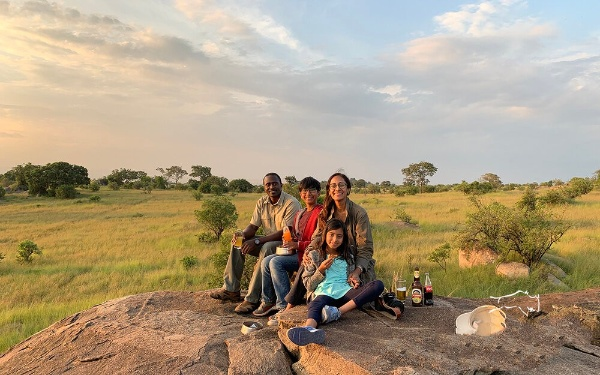

SAFARI Blog
Safari Stories from our Family Safari.
February 7, 2020
I wanted to share some of the many Safari Stories from my kids Summer Safari 2019. We continue to recollect, ‘remember that’, and keep the stories alive from our memorable time together.
“ My four favorite things were seeing all the Masiys [Maasais] dance because it was really nice. And I really liked seeing Scarface because he was cool to achaly [actually] see him. All the people at the camps were very nice because they are surprized that a kid is here - they really enjoy kids. And my last thing I liked was leopards. We found 2 leopards - they are bautiful [beautiful] creturse [creatures].
-Farhana, 8-yeard-old at the time of her Safari. Written out as she wrote in her Safari journal.

“ The funniest things I saw on Safari … seeing cheetahs getting surprised by a vulture. Cheetahs, really? And seeing lion cubs walking away from their mom and the mom was yowling for them to come back. They were so naughty, the mom had to go run after them.” - Shiraz, 10-years-old at the time of his Safari.
Family Safaris are amazing!
If you have any questions - will they be bored, how to create the
right Safari itinerary, and more - Let’s chat.
I will share my personal experiences for your Safari.
2019; You were amazing!
December 27, 2019
I want to thank you so much for being here, whether you’ve been reading for years or just stopped by. I’m so grateful for you! For letting me share my Safari expertise and thoughts, your Safari Stories, and if not your Safari Stories yet; maybe inspiring you to get in touch with me and planning your Safari.
2019 was epic for me!
- I got to travel for the first time to Botswana and South Africa -
amazing! I am ready to take you there as I have personal knowledge to share.
- Summer started off with my family on Safari to Kenya and Tanzania. Taking my kids to my
favorite places and my home country [Tanzania] was magical. Take your children on Safari -
memories to last a lifetime!
The Safaris I plan become personal as I take you to places and Safari Lodges I have been/stayed or know 101% you will be well taken care off.
Cheers to 2020 and more experiences and adventures. “If I have ever seen magic, it has been in Africa.” – John Hemingway
Asante Sana [Thank You so much!] and looking forward to chatting more about my stunning corner of Africa.
Come ‘feel the love’ as inspired by The Lion King
November 14, 2019
I'm not lion when I say that the life-like movie doesn't even compare to the real thing. My husband, kids and I just got back from our Safari and I'd like to share 4 things that’ll make you feel royal like Simba and Nala.
#1: See the real-life Simba and Nala
While we were in Masai Mara we got to spend some time up-close and personal with a lion couple. They weren't singing, but while watching them we could definitely feel the love that night.
#2: Experiencing the Circle of Life
With the Maasai Tribe in Ngorongoro, we danced, sang and learned how to make a fire. They showed us how they live and taught us about their livestock. Fun fact: they let the baby animals stay in their boma (home) with them!
#3: The Elephant in the Room
We saw SO MANY elephants in Masai Mara, Amboseli, and Tarangire. At one point we counted a herd of about 80 + elephants including the babies!! They say an elephant never forgets, and my kids will never forget the time they got to spend with them.
#4: Serene Serengeti Sunsets
On our last day in Serengeti, we climbed a million-year-old rock (called a kopje) to watch the sunset. We all enjoyed popcorn and our drink of choice. Sitting and watching the sunset with my kids was definitely a "hakuna matata" moment.

You better "Mufasa" if you want to go on a Safari next summer!
Timeline
June 2021
How does your Safari make a difference!
May 2021
Types of Safari Accommodation - What are Camps and Lodges?
April 2021
Let's get going already! What to pack on your African Safari?
October 2020
What type of Safari vehicles will you ride on your wildlife Safari? Top 3 Reasons to Visit the Serengeti in the Green Season
July 2020
When you are not listening to your guide.
May 2020
Served with a smile! Leopard Day!
April 2020
Africa in the time of CoVID-19
March 2020
What will this day be like [on Safari], I wonder? Planning Your African Safari
Feburary 2020
"Enjoyed every bit of it" Your Safari is only as good as your Guide Safari Stories from our Family Safari.
January 2020
MalaMala Game Reserve in South Africa "I can't say enough good things about Mahale." You never know who'll join you for your meal.
December 2019
2019; You were amazing! 'lucky I had as much time to spend ...'
November 2019
'I had to keep saying this is real!!!" Come ‘feel the love’ as inspired by The Lion King
October 2019
An African Safari for a Birthday
August 2019
Safari Highlights Checked - Family Safari to Kenya + Tanzania
March 2019
Not lyin' about a leopard a day on Safari in South Africa Botswana. You are amazing!
January 2019
Okavango Delta + Sabi Sands
December 2018
2018; Asante for a great year!
October 2018
Sundowners on Safari.
September 2018
Family Safari in Africa.
August 2018
My 5 minutes of fame. Slow Travel on Safari.
April 2018
Trekking Tips for Mahale Mountains from Greystoke. Tanzania with Mefi - Katavi + Mahale + Ruaha.
December 2017
"Quite a Memory." Lioness Fighting.
October 2017
Can't Thank You Enough.
August 2017
'Can't wait to plan round two."
July 2017
Swahili.
June 2017
Father's Day. Birds on Safari
May 2017
Keep Calm and Swat Away.
April 2017
Lost in Translation.
March 2017
Feel Good Moment on Safari. "Tanzania is definitely an exception."
February 2017
A Typical Day on Safari in Tanzania and Kenya.
January 2017
"Reactions were Priceless"
December 2016
2016; Kwaheri. Gift Guide for the Safari Goer. Safari Photography.
November 2016
Wellness Safari. Everything we dreamed off and more.
October 2016
Style on Safari. Honeymoon Safari in Africa.
September 2016
Night Game Drive on Safari Your Kids will Thank You. Capture the Golden Hour. "Amazing Trip to Africa."
August 2016
Elephant Day Yes, Safari Party Tanzania with Mefi
May 2016
Maasai Village stop on Safari
April 2016
Best time to go on a Safari? Safari Documents What is a Luxury Safari?
March 2016
Our Safari Guides know Photography Lake Natron | Tanzania Food on Safari
November 2015
Watching an Elephant Chomp
October 2015
Specialist Guide on Safari Safari with Children, why Yes! Tanzania was by Far the Best Trip.
September 2015
Don't Mess with Me!
August 2015
Take a Break from Game Driving ... go Walking.
July 2015
April Showers, May Flowers
June 2015
Safari Staple - Wind Jacket. Early Morning Game Drives
May 2015
The Great Wildebeest and Zebra Migration
April 2015
5 Unforgettable Safari Experiences for Your Mother.
February 2015
My camera gear on Safari
December 2014
Meru House
September 2014
Our Safari Guides